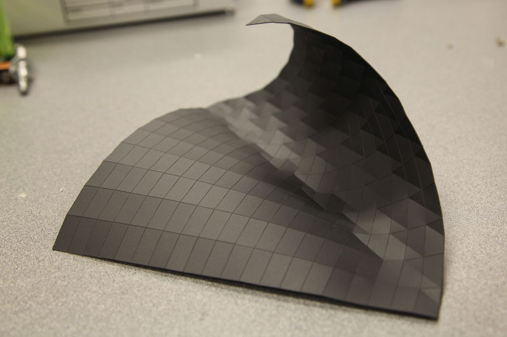
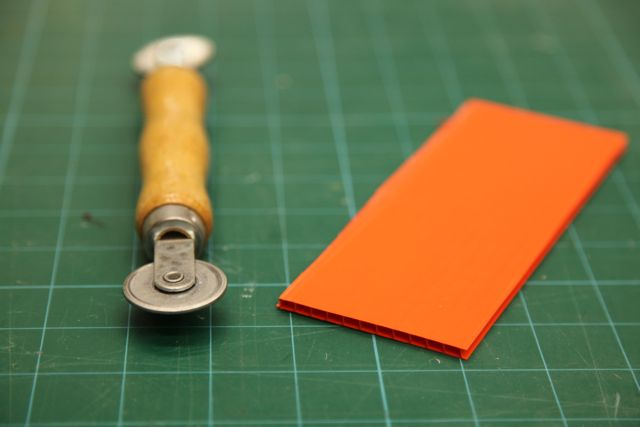

6.849: geometric folding algorithms
For my final project, I undertook several experiments in rapid prototyping of folding structures. Over the course of the semester I had heard, read, and thought about so many interesting processes related to folding -- this page documents my experiments trying to create interesting objects with them.
 |
 |  |
| Python + SVG | Vinyl Cutter + Polypropelyne | Laser + Sewing |
 |
 |
 |
| Laser + Cardboard | Corrugated Plastic + Creasing Wheel | Microspheres + Urethane Rubber |
 |
||
| Laser Welding + Films |
6.849 2012